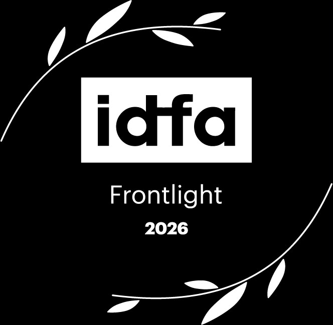
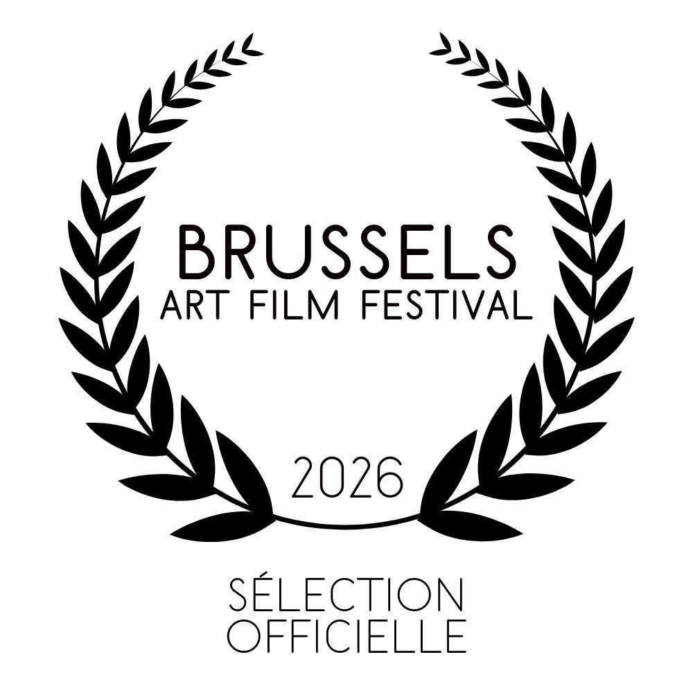
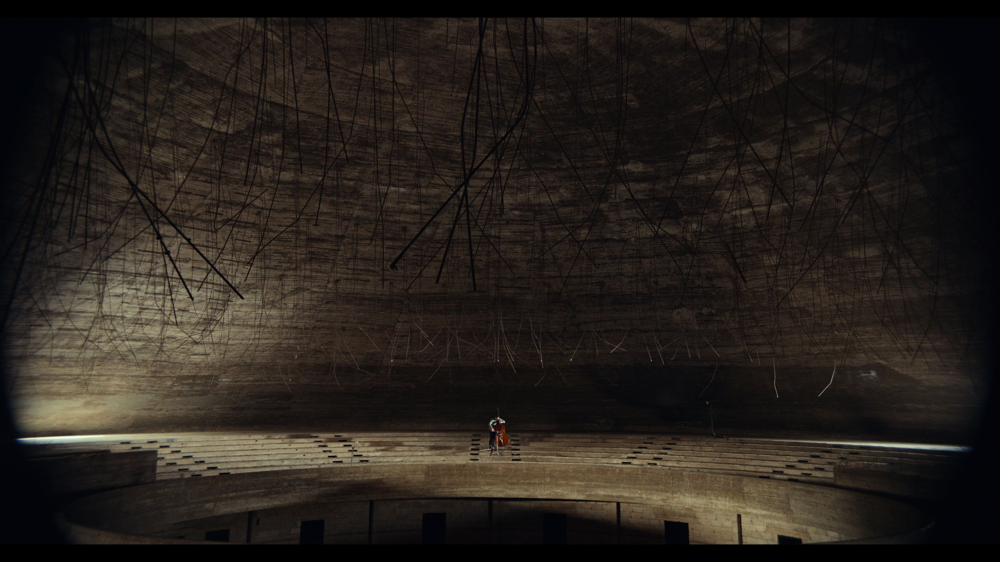
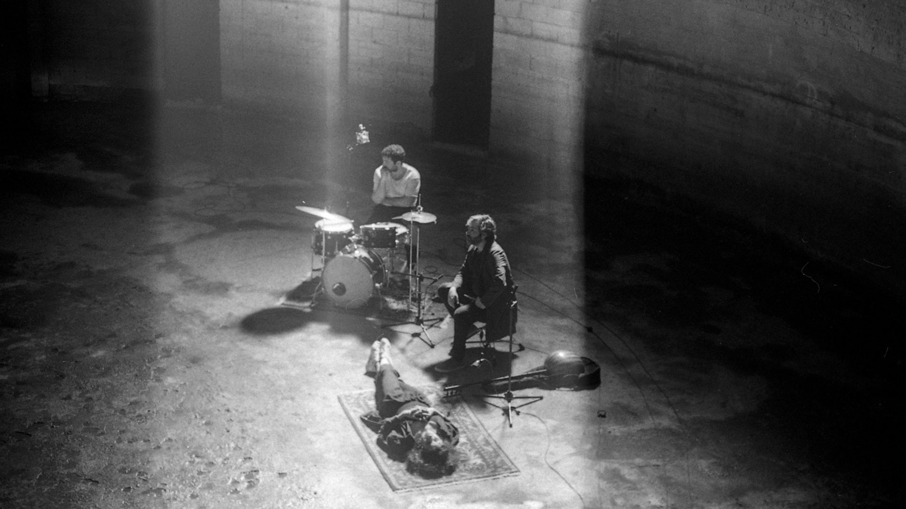
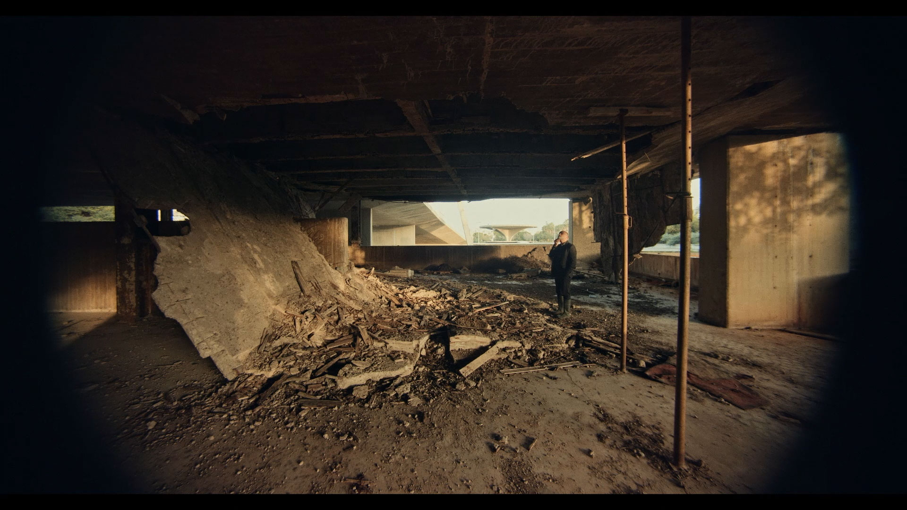
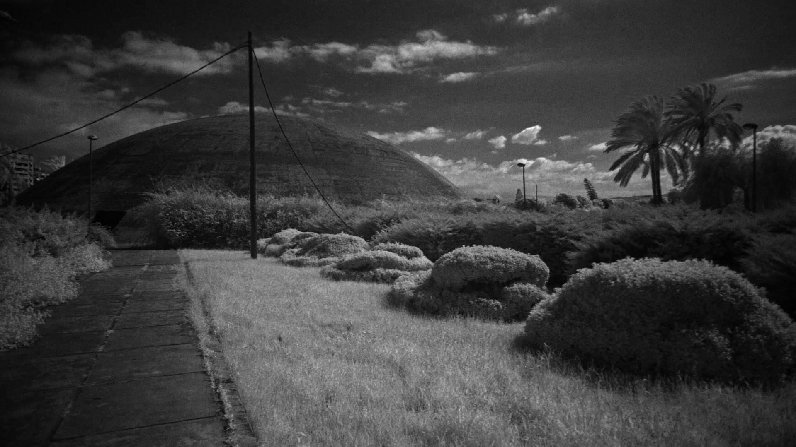
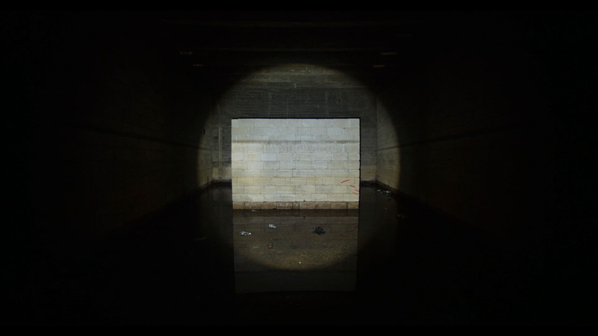

THE DOME
SESSIONS.
An exploration of sound, space, and memory.
WATCH THE TRAILER ↘

2026The sound of
an unfinished
space.
In Tripoli, Lebanon, an unfinished experimental theatre becomes a meeting place for sound, architecture, and memory.
Designed by Oscar Niemeyer in 1962, the Dome at the Rachid Karami International Fair was never completed. Its raw concrete interior and unusual reverberation became the setting for a series of performances in which musicians respond to the space itself.
The Dome Sessions follows the collaborative experiment and the building's place in the city's social and historical fabric, asking how art can reclaim abandoned spaces and reimagine their futures.
Adapted from project description by Wassila Abboud, December 2024

Trailer.
OPEN ON VIMEO ↗Inside the Dome.
Selected stills from the film






Made by
many hands.
THE DOME SESSIONS IS
- Directed by
- Firas El Hallak
- Produced by
- Anthony Tawil & Firas El Hallak
- Featuring
- Wassim Naghi
- Director of Photography
- Joe Saadeh
- Gaffer
- Mizyed Azrai
- Line Producers
- Jad Nehmeh & Joe Ghawy
- Production Manager
- Layane Hajjar
- Drone Operator
- Omar Imady
- Film Editors
- Firas El Hallak & Rita Mounzer
- Colorist
- Chrystel Elias
- Sound Designer
- Cedric Kayem
- Graphic Designer
- Cynthia El Hasbani
- Poster Design
- Valentijn Goethals
- Set Photographer
- Gabriel Fernaini
- Behind-The-Scenes
- Nader Bahsoun
- Blender Artist
- Mansour Aoun
- Copywriter
- Wassila Abboud
- Subtitles
- Anthony Tawil & Lama Al Arian
- Location Manager
- Omar El Sayyed
- Rental House
- Platform Studios
- General Fixer
- Adel Hallak